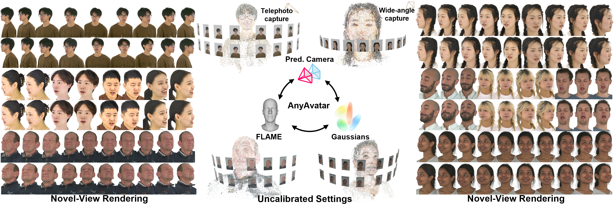
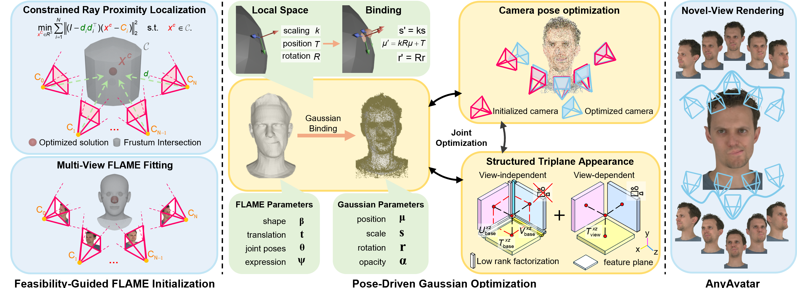

Most existing Gaussian head avatar methods rely on accurately calibrated multi-view cameras. Under uncalibrated camera settings, where camera poses are obtained from image-based prediction, inaccurate pose initialization becomes a major obstacle for Gaussian head modeling. This challenge arises in two coupled stages: inaccurate camera poses can undermine cross-view head observability and destabilize the geometric prior during FLAME fitting, while residual pose errors can introduce projection inconsistency during Gaussian Splatting (GS) optimization, causing overfitting to training views and degrading novel-view quality. To this end, we propose AnyAvatar, a unified framework for high-fidelity and controllable Gaussian head avatars under uncalibrated camera settings. First, we introduce Feasibility-Guided FLAME Initialization, which localizes a feasible FLAME head position from coarse predicted poses through Constrained Ray Proximity Localization, restoring stable cross-view head observability and providing a reliable geometric prior. We then introduce Pose-Driven Gaussian Optimization, which jointly refines camera poses, Gaussian attributes, and FLAME parameters during GS training, while using a structured triplane-based appearance module to suppress pose-error compensation and improve cross-view consistency. Extensive experiments on multiple uncalibrated datasets and self-captured data show that AnyAvatar achieves state-of-the-art performance and remains robust across diverse camera pose prediction models.

Overview of AnyAvatar. AnyAvatar takes a multi-view head video sequence with uncalibrated camera poses to achieve high-fidelity and controllable 3D head avatars. Specifically, we first estimate coarse camera poses using an image-based predictor and perform Feasibility-Guided FLAME Initialization to recover a FLAME prior. We then conduct Pose-Driven Gaussian Optimization by jointly refining FLAME parameters, Gaussian attributes, and camera poses together with a structured triplane appearance module to suppress appearance compensation.
We evaluate AnyAvatar on NeRSemble, EmoTalk3D, and self-captured datasets without calibrated camera parameters. Camera poses are initialized using VGGT , and the corresponding FLAME meshes are estimated under these image-based pose predictions.